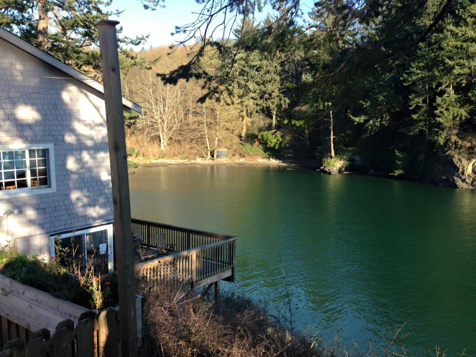

Rustic Cabins – While being our most basic cabin type, these waterless cabins are our most economical, heated indoor spaces. Woodstoves provided in select rustic accommodations.
Deluxe Cabins – Providing an additional level of comfort, our Deluxe Cabins are equipped with a bathroom and kitchen (or kitchenette). Most of our Central Deluxe Cabins offer some of the best views on the property!
Group Cabins – Harbor House and Retreat House are best suited for (but not limited to) family reunions, wedding parties, workshops, and retreats, offering the home-like comforts necessary for meal preparation, dining and entertainment.
